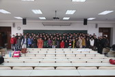
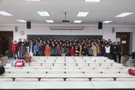
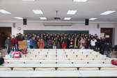

2012 Fall
Text: Batchelor, An introduction to fluid dynamics, Cambridge University Press,
"流体动力学导论(英文影印版),机械工业出版社"， 中译本
考核：40%平时作业+60%期末考试
参考资料
1. Vectors, Tensors, And The Basic Equations Of Fluid Mechanics - Aris R.djvu
2. Viscous fluid flow, F. White
3.流体力学，第二版，周光炯等，高等教育出版社
| Lecture | Date | Assignment | |
| 1 | Oct 8 | Course overview | |
| 2 | Oct 11 | Tensor notations | 作业1assignment1, solutions |
| 3 | Oct 15 | Stress in fluids | |
| 4 | Oct 18 | Kinematics 1 , material derivative, mass conservation, stream functions | |
| 5 | Oct 22 | Kinematics 2, relative motion near a point | |
| 6 | Oct 25 | Kinematics 3, Helmholtz's decomposition | |
| 7 | Oct 29 | Kinematics 4, irrotational solenoidal flow | 作业2assignment2 solution: page1, page2 |
| 8 | Nov 1 | Equation of motion 1 ,integral form | 作业3assignment3 solution: page1,page2,page3 |
| 9 | Nov 5 | Equation of motion 2 ,stress | |
| 10 | Nov 8 | Equation of motion 3, energy | |
| 11 | Nov 12 | Equation of motion 4, energy 2 | |
| 12 | Nov 15 | Summary of chapters 1,2,3; | |
| 13 | Nov 19 | CFD commercial package Fluent demonstration , uniform incompressible visous flow 1, Poiseuille and Couette flow | 作业4assignment4, page 178 exercise 2, due Nov 26 |
| 14 | Nov 22 | Uniform incompressible visous flow 2, flow in a tube | |
| 15 | Nov 26 | Uniform incompressible visous flow 3, dynamic simularity and Reynolds number | |
| 16 | Nov 29 | Uniform incompressible visous flow 4, lubrication theory, hele-shaw cell and flow in porous media | 作业5assignment5, page 263, excercises 2,3, due on Dec 6 , solutions |
| 17 | Dec 3 | Vorticity dynamics | |
| 18 | Dec 6 | Laminar boundary layer | |
| 19 | Dec 10 | Boundary layer, Blasius solution | |
| 20 | Dec 13 | Prof. Wu Chuijie's Seminar on CFD | |
| 21 | Dec 17 | Flow separation and drag, turbulence | 作业6assignment6, solutions 1, 2, 3, 4, 5 |
| 22 | Dec 20 | Inviscid flow theory background | |
| 23 | Dec 24 | Potential flow | |
| 24 | Dec 27 | Course review | |
| 期末复习指南 Guideline for the finals | |||
| Jan 13 | 期末考试时间 ：1月13日 3-4节 地点：研教楼 研104 |
|  |  | |
|  |
{kind=link}
{kind=link}
{kind=link}
{kind=link}
{kind=link}
{kind=link}
{kind=link}
{kind=link}
{kind=link}
{kind=link}
{kind=link}
{kind=link}
{kind=link}